무엇을 만들었는지보다 어떻게 풀었는지
각 페이지는 문제 → 판단 → 행동 → 결과 → 배운 점 순서로 적었습니다. 구현하지 못한 범위는 따로 표시했습니다.
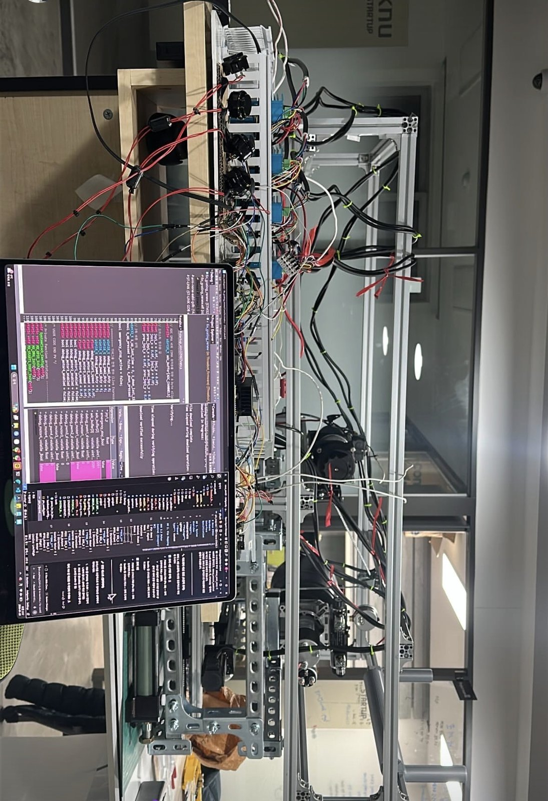
쓰리봇 — 빗물받이 청소 로봇과 관제 플랫폼
전장·펌웨어 → 비전·계측 → ROS2 → 백엔드·관제 → 사업화까지. 딥테크 예비창업패키지에서 한 사람이 관통한 기록과 6개 문제 해결.
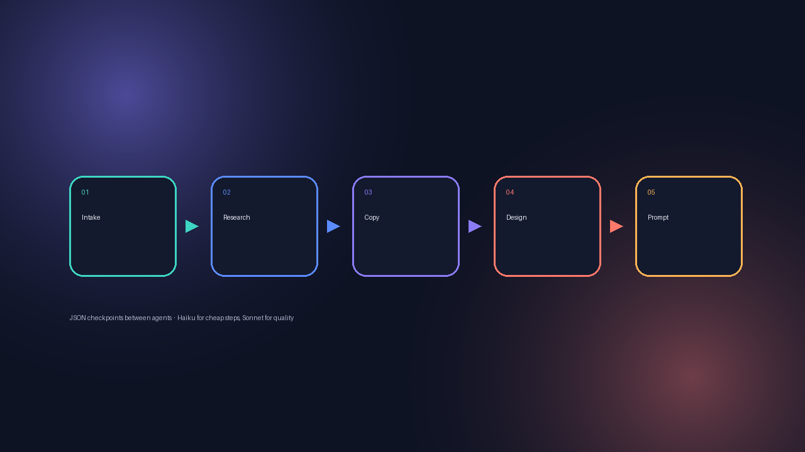
AI 자동화 파이프라인 — 에이전트 7개
5-에이전트 상세페이지 생성, GA4 A/B 자동 판정, 설득 규칙 R0~R7 PPT CLI, 쇼츠 수집, Remotion 영상. "AI 도구를 써본 것"이 아니라 반복 작업을 자동화 구조로 바꾼 기록.

안전 알림이 — 안전보호구 착용 모니터링
사람 수 vs 헬멧 수 비교에서 머리·입술 직접 검출로 판단 방식을 바꾸고, 카카오톡 알림과 라즈베리파이 경보까지 현장에서 작동하게 만든 시스템.
로봇팔 Physical AI — 책상정리 에이전트와 쓰레기 수거 VLA
MyCobot280 + SO-101 + 오픈클로 에이전트로 사용자 의도를 동작으로, SAM2 분할 + Octo 4DoF 파인튜닝으로 생활쓰레기 수거. SDGs 소셜벤처 은상.
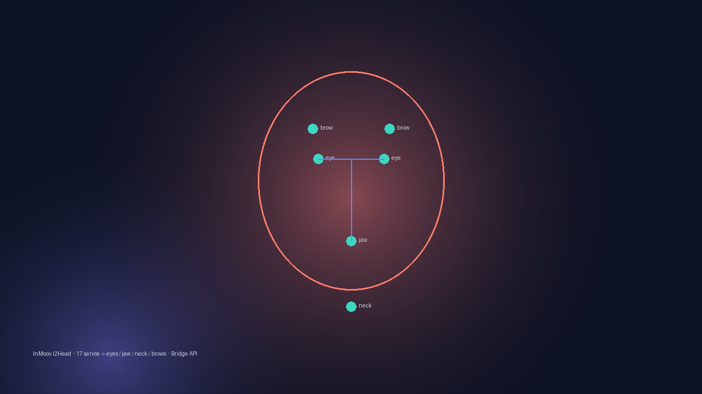
면접훈련 로봇 — InMoov i2Head를 AI 인터페이스로
서보 17개 휴머노이드 머리를 눈·턱·목·눈썹 4부위로 범위를 잘라, AI 서버와 하드웨어를 Bridge API로 분리한 멀티모달 면접훈련 시스템. OPIc 음성 MVP 포함.
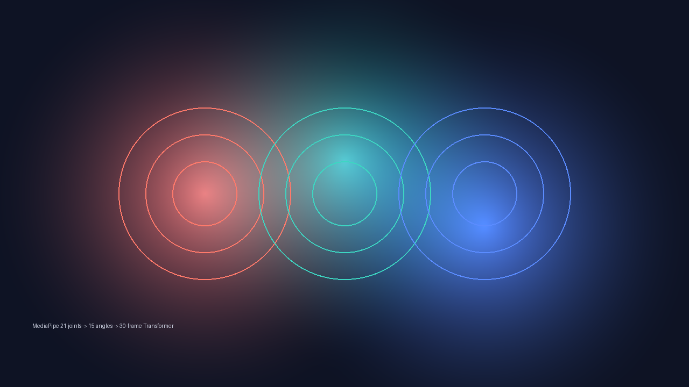
손동작 인식 스마트 무드등 / 환경감응 조명
MediaPipe 21관절 좌표 대신 관절 각도 15개를 특징으로 설계하고 30프레임 Transformer로 동작을 분류. ESP32 FreeRTOS/MQTT 조명 프로젝트 포함.
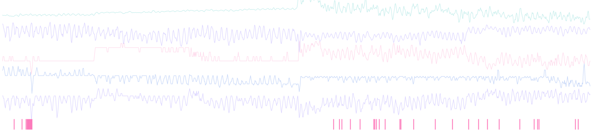
KAMP 사출성형 검사 우선순위 모델
"불량을 맞히지 말고 검사 순서를 정하자." 세 근거를 결합한 순위 모델로 검사량 −32%, 날짜순 walk-forward 4겹 검증으로 정확도 99%의 착시를 반박.
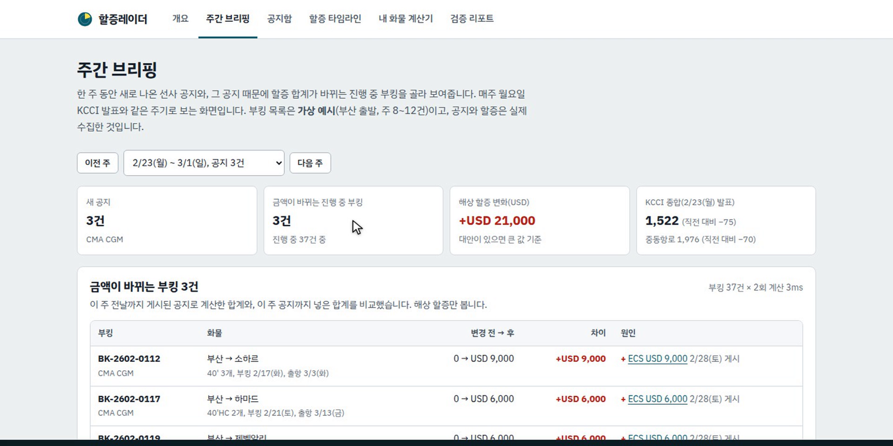
할증레이더 — 선사 할증 공지를 읽는 LLM + 규칙 검사
선사 7곳 공지 80건을 수집하고 정답셋 45건을 직접 라벨링해 추출기 3종을 비교. 근거 구절이 원문과 일치할 때만 자동 승인, 95.2% / 98.2%.
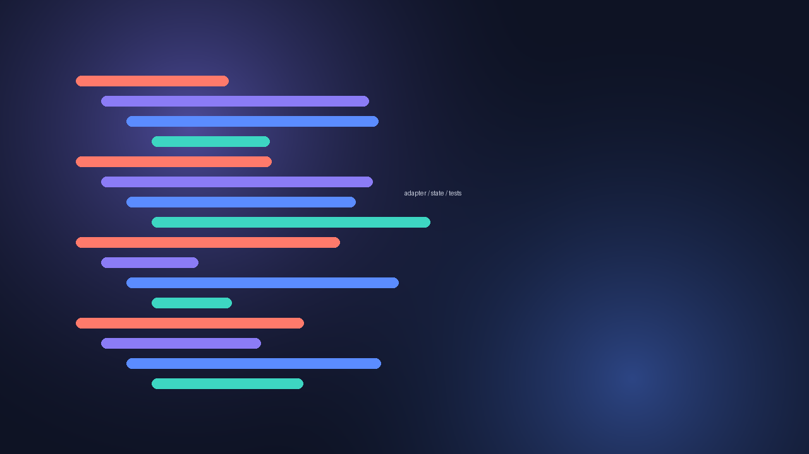
Spendable · 오목 AI · 산불 CCTV — 같은 원칙, 다른 도메인
바뀔 부분은 어댑터로 분리, 분기가 늘어날 로직은 상태 기반. 핀테크 프로토타입, Unity 3D 오목, 5 마이크로서비스 산불 감지에서 같은 설계 원칙을 반복.
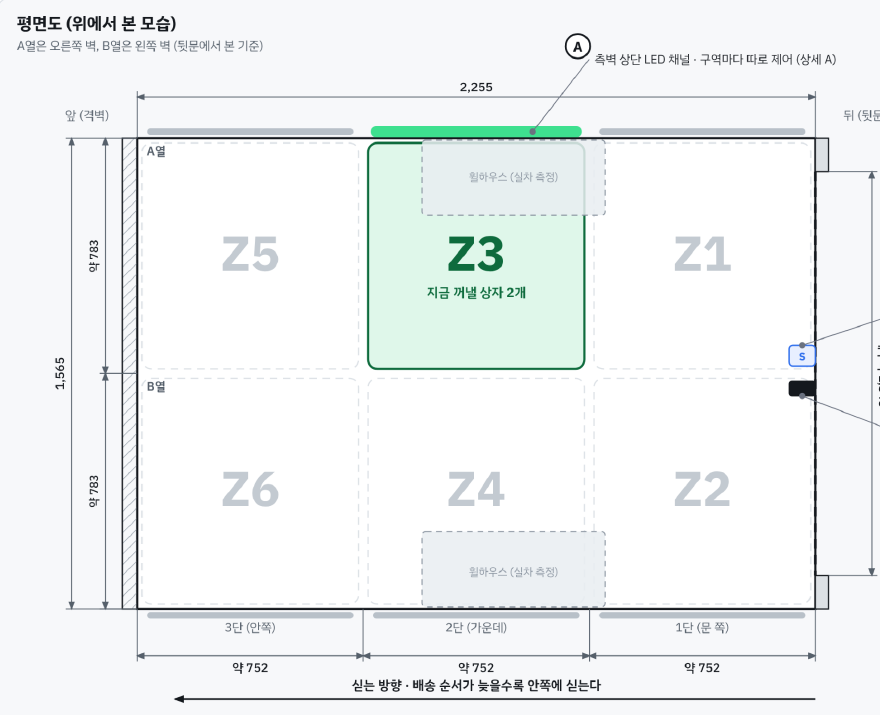
PV5 카고 택배 패키지 — 뒷문을 열면 꺼낼 칸에 불이 켜진다
카메라도 버튼도 없이 차량 신호 셋으로 점등. 6칸 적재구역, ESP32·WS2812B 표시 모듈 회로도 REV C, 하네스·BOM·상태도까지 설계한 기아 PBV 아이디어 공모전 제안.
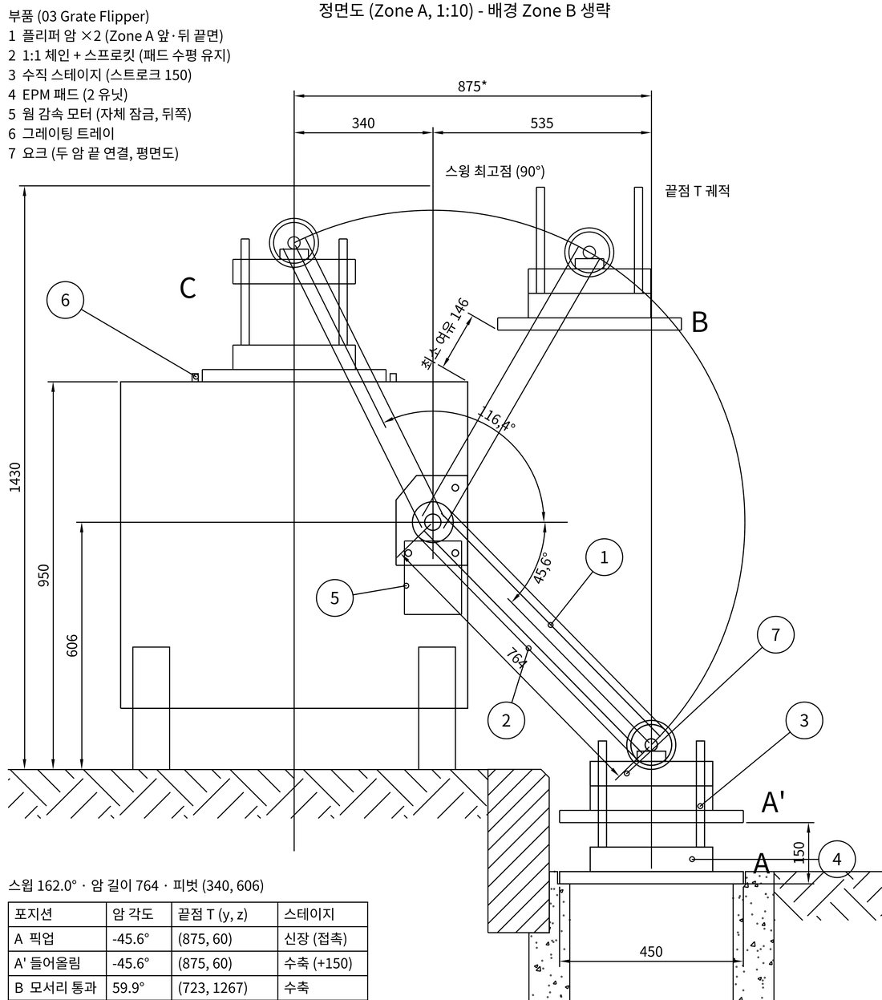
DRAIN-X — 2035 자율 빗물받이 준설 로봇 설계
ZYXCAD AX 경진대회 설계 부문. 쓰리봇 MVP에서 부딪힌 한계를 설계 요구사항으로 바꿔, 덮개 플리퍼·측면 굴착 갠트리·클램셸을 도면 6장(조립도·부품도·상세도·구조도)으로. Python 기구 계산 + LISP로 CAD 안에서 재검증.
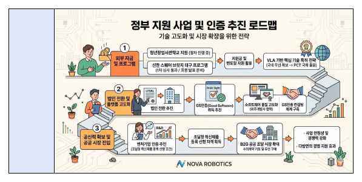
숫자가 틀리면 안 되는 문서 — 리츠 금융 모델, 특허 초안, 사업계획서
청년임대 리츠 20년 현금흐름 몬테카를로 5,000회, 배터리 특허 초안 2건과 기술동향 45p, 예창패 사업계획서·IR. 기술을 문서와 설득으로 번역한 기록.
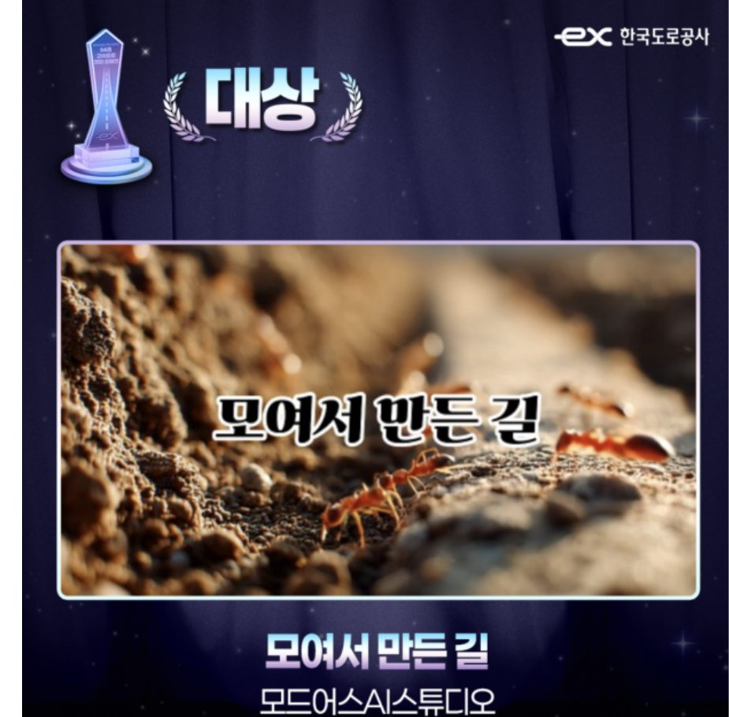
"모여서 만든 길" — AI 도구 6개로 만든 56초
영상 제작 경험 없이 혼자, GPT·미드저니·Kling·Veo3·다빈치 리졸브·수퍼톤을 역할 분담해 한국도로공사 56주년 공모전 대상. 같은 파이프라인을 코레일 캠페인에 재사용.

디자인·웹툰 공모전 — 콘셉트는 직접, 생성은 AI
판타지아 대구 AI 페스타 카드뉴스 대상. 하나카드 plate 2건, 웹툰 4편, 포스터 2종, 캐릭터 1종 — 기획 의도·스토리보드·규격·금지 사항을 지시문으로 고정하는 운용 방식. 전체 작품은 Works 갤러리에.